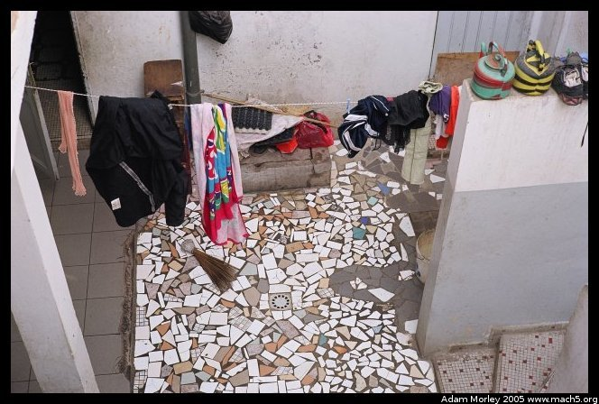
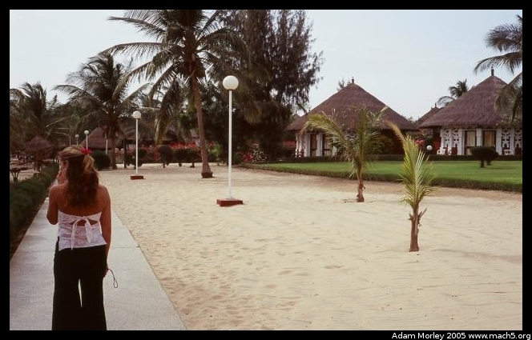
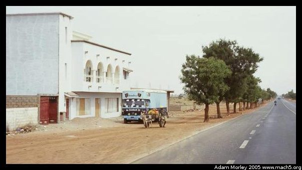

{kind=link}

Disclaimer: It is quite hard for me to compress this trip into a web-page with pictures. It doesn't do Senegal or the people justice, and definitely lacks compared to actually going to Senegal. It is, in a way, a journal for myself to augment my written (ie: paper) journal. It's also so that my family and friends who can't go for whatever reason can see what it looks like and some very basic impressions.
In mid-April 2005, I traveled to Senegal. Setting out from Seattle, I flew to Copenhagen to visit my host parents for a few days. A surreal experience to be sure. Walking back up to the house I lived in almost a year ago reminded me of how much I miss Denmark. Especially the people. Denmark cannot be understood without meeting a Danish family, and coming to understand how the Danes live. So much of their culture and their society revolves around the home and family, that a visit simply to "see the sights" is not really much of a visit.
After spending a few days with my host parents, and walking around the town, I flew to Brussels. For some reason, the Belgians have really cheap youth fares to a number of places in Africa. So I spent a few days in Brussels, and found it to be quite a change from Copenhagen. Not quite as orderly and clean, and much more mixed in terms of ethnicity and background. Plus good food to boot. Belgians waffles are tasty.
So my itinerary was something like this: SEA (Seattle depart) -> CPH (Copenhagen, Denmark for 2 days) -> BRU (Brussels, Belgium for 4 days) -> DKR (Dakar, Senegal for 8 days) -> BRU (Brussels for an hour) -> CPH (Copenhagen for a few days) -> SEA (return home)
I took photos in Copenhagen and Brussels.
On April 13, around 10:00, I boarded SN Brussels airways flight 235 bound for Dakar, continuing to Monrovia (Liberia). It was quite a scene in the terminal, with quite a mix of people. A few young Americans studying abroad, some going for service learning. Some missionaries with long-sleeved shirts which said, "Jesus saves" on the back, who were going for a week to build something in a rural village. And see if they could convert the continent to Christianity. Some Liberians with large amounts of US dollars. Some Senegalese folks in what I would later find out are traditional clothing (a boubou, Something like this). And one Dane, complete with Danish flag, on her way to work for an NGO. It never ceases to amaze me how a country of only five million can have people scattered everywhere across the globe. At any rate, a truly picture perfect group of people to fly to Africa with.
What page would be complete without the obligatory reference to the CIA World Fact Book? Here it is. Senegal is a west African nation of ten million or so, with two million in the capital city, Dakar. A former French colony, their major industries include peanut farming (supposedly a French idea, and a truly unsustainable crop), limited grain production (semi-sustainable, mostly millet and sorghum), mining, and (according to the CIA) fertilizer production. No doubt their fertilizer industry grew because of a need for peanut farming. Peanuts leech minerals out of the soil, and if crop rotation is not used, then industrial fertilizers must be. And with the sheer amount of Peanut oil used in Senegalese cooking, they need a *lot* of peanuts!
Senegal is widely regarded as one of the most peaceful of sub-Saharan African nations: it has always had peaceful transitions of power, never had a civil war (minus some limited fighting in the south), and I was told the violent crime rate is quite low. I met some long-term missionaries (not the fly in/fly out kind) who actually do what I would classify as missionary work (helping people, not just trying to make them change their religion), and they lauded the low crime in Senegal. They wagered it was safer in Dakar than in many other cities. I have to admit, walking around at night in Dakar didn't bug as much as some other cities I've been in.
As with most European carriers, a five hour flight dictated one full meal service (with fresh bread, wine, and ice cream), along with a snack prior to arrival. We touched down in Senegal, where I was greeted by 35C and 80% humidity. This was after leaving Brussels, which was around 6-8C the day I left. Quite a change. No jetways (reminded me of San Jose), and a cute little bus to take us 100 meters to the terminal. A rather quick passport stamping, and a cursory customs inspection left me standing in Senegal. The bank (not surprisingly) was closed, and the ATM was non-functional. But the friendly Senegalese outside the terminal were more than willing to offer "a really good rate." Since my customs clearance was so quick, my friend (whom I was going to visit) Addie had not yet arrived. So I got treated to quality Senegalese "friendly heckling" for any number of services: taxis, money exchange, places to stay, tours, sex, and one man who spoke near perfect English (he studied abroad). We had a nice chat until Addie arrived. She had been trying to locate The Gambian Embassy to see about Visas for a visit.
I had not seen Addie for six months, since the last time I visited Cleveland. My second surreal experience of the trip was seeing her walk through the door of the terminal. So weird. Addie studied in Dakar, while I studied in Copenhagen. In so many ways, our choices reflected parts of our personalities. Senegal is wild, friendly, exciting, somewhat disorderly. Denmark is quiet, reserved, ordered, thoughtful. She came back to Senegal on a fellowship to work at a hospital in Dakar.
The first day started with a cab ride in the usual developing world cab: no seat belts, probably boosted five years ago from a European country (still had the F sticker for France), questionable mechanical quality. Surprisingly good driving though. I had expected much higher rates of speed. After my trip to Russia, where I remember coming into a rotary at nearly 100 kph, with some man from Uzbekistan driving, while blasting extremely loud music, I had expected similar treatment in Senegal. Many of the cars looked as though they had been in accident, but I never actually witnessed one (either as a bystandard, or as a participant).
I lucked out that I could stay with Addie's host family in one of the suburbs (Liberté 2, near Liberté 3) of Dakar. As with Denmark, I have to say that unless you meet real people and see how they live, you can't understand Senegal either (I have found this to be true almost anywhere, but especially so in Denmark). In Senegal, at Addie's host family, three generations lived in one house, definitely over ten people. They were an upper-middle class family, with running water, multiple rooms, no hot water, a TV plus DVD player, two stories in a shared building arrangement (another family lived in the same building). The kitchen/mixed use area was partially outside, enclosed in a courtyard. One bathroom, with shower, toilet. Most times, the kitchen sink had a lock on it. It was next to the pen for the sheep. Yep, off the kitchen was the sheep room. After all, there is one specific Muslim holiday where you need a sheep.
For some reason, I managed to arrive on the day when Addie was supposed to go meet her friend who ran a telecommunications company in Senegal. He was also in part responsible for "bringing TV to The Gambia." As you might guess, he is what would be called "rich." So we taxied over to his horse stable, next to an army base, by way of a taxi with a very patient driver who didn't mind that we only kind of knew where we were going. Then we rode horses.
I must admit that I didn't think I would end up in Senegal riding a horse, but I came with no real plans, so whatever was going to happen was going to be fun. Addie's friend's daughter, about eight years old, was riding when we arrived. I wish I could ride a horse like she could ride a horse.
Addie rode first.
After some horse riding (surprisingly straightforward and fun), we went back for dinner with the host family. I had only had Senegalese food once before (in high school, at a World Affairs function focusing on Africa), and I found it quite tasty. It seems local food is made by:
We ate with spoons, unlike the last time I ate Senegalese food where it was right hands only. After talking a bit with the host kids in a combination of bad French and English, I went to bed in the 32C heat, and slept like a stone.
I awoke rested, and heard the sound of singing coming from the kitchen. Before heading down to see about the singing, I took some photos of the surrounding area.
A view from the balcony down into the open area. Bathroom upper right corner.
Same deal.
Starting one of the stoves.
One of the walls of the house.
Another kitchen picture. Those onions are all for today. The host family ran a sandwich shop for the neighborhood, and needed quite a large amount of food for the shop.
A picture of the neighborhood
A picture toward the neighbor's house
Towards the Cyber Cafe, on the street level
Across the street
Down the street. See the taxi? Notice the wooden box on the left behind the tree. That's the boulangerie/patisserie, a wooden box probably 2 meters by 1 meter by 1.5 meters which sells baguettes.
Down the walkway next to the house.
After eating a breakfast of bread, butter, and cocoa, it was off to Dakar.
We headed to downtown Dakar, via taxi. Our goals were simple: I needed to change some money, and I wanted to see some touristy sights such as the market and the island (Goreé) off the coast with the slave museum. This first day, I wasn't much of a photographer. I must admit that the camera didn't even bother to come out of the bag until Goreé. So many things to experience, to see, to smell, it just didn't seem right to bother with photography. Plus, the Senegalese are not too hip on having their photo taken by random white tourists.

We went for a walk around Goreé. After an incident with a rather sketchy (somewhat crazy) man, we ended up walking around looking at the art made by the residents of Goreé. Goreé is a small island, with a village mainly focused on providing tourist services like art, souvenirs, and restaurants. The villagers were once deported (for a few hours) so George W. Bush could visit the slave museum. Sometimes I wonder if he ever gets to meet anyone from the countries he visits. The paintings were all acrylic, and it seemed that even the statues were locally carved.
At the top of Goreé, we saw some kids playing football,
Dakar, from a distance (Goreé is quite close to Dakar),
Some kids, who enjoyed the fact that Addie could speak not only good French, but also passable Wolof
Some more kids. These kids were very excited to meet us. Later, on the ferry ride back to Dakar, they decided to crowd around and talk to us. I have to admit that my French was lacking while trying to engage in more involved conversation with these fifteen year olds.
Next comes the now infamous incident with a monkey. We spied this monkey sitting next to an art dealer's shop. He had a leash, a toothbrush, and a leftover banana peel. Naturally, Addie was intrigued. I was still rather leery of all animals, given I'd been in Senegal only a day or so. So Addie decided to go and investigate:
Cute, eh?
Addie extends an olive branch
The monkey feigns disinterest
The monkey strikes!
The monkey searches for the goods
He goes for more than Addie wants him to get, so she lets him have her water bottle:
With his sharp teeth, he easily pierces Addie's bottle. After this, it leaked chronically!
Now for the safety message: when in Africa, don't play with the monkeys. This monkey turned out to be the art shop owner's pet --- lucky for Addie since it bit her when she tried to retrieve her water bottle. Hurt for *days*!
The next day, Addie wanted to show me her favorite beach. I can't resist good beaches, so I said OK. For the low, low price of only seventy-five cents (USD), we rode to a beach near the airport, complete with mini-restaurant, fruit stand, and souvenir vendor. Along with one soon-to-be-completed hotel.
Looking down the beach.
What study abroad students seem to do often in Senegal. . .The developing world does get to you after a bit, and some time at the beach is quite welcome.
A new hotel going in, near this wonderful beach. This new hotel will be quite close to both Dakar, and the airport. Addie surmised that it would also lead to the beach being privatized. Along with the marijuana dealers being forced to leave the area.
We left the beach and went into Dakar, to visit the central market. This time, I actually took out my camera, albeit not very many times. It just wasn't an easy place to photograph, given the sheer amount of traffic, and the fact that most of the market was really just tilt up stalls along a road. So at any given time you could get hit by a bike, bus, car, truck, donkey cart, whatever. This meant I wasn't too terribly interested in photography, but more keeping track of where we were going, and how to avoid getting a large Mercedes emblem implanted mid back.
Off the main road of the central market (there are multiple big markets in central Dakar, I don't remember which this was taken at). Everything imaginable is sold here: clothes, personal products, televisions, stereos, car parts, aquariums, knock-offs, food, and everything else you can imagine. What's more amazing is the prices --- everything is negotiable, and in French numbers, since the Wolof money numbers (which most people apparently don't know) are different than the counting numbers. I even saw a truck tire being sold at a market like this once. And later, I saw a kid rolling it along the street, presumably back to a truck which was in need of a tire!
A couple of Senegalese, looking at jeans. Or possibly at me, though I was not quite the hot item in Dakar, as there were plenty of white tourists. The man in the white is wearing a bou bou, the traditional Senegalese clothing. Behind him, you can see a telecentre, a sort of glorified phone booth, allowing you to call across the world for moderately inexpensive rates. Cell phones are also quite common in Senegal; many people have them. It's a strange thing to be in a country of people who make virtually no money, but see them carrying Louis Vuitton knock-off (some are actually real!) purses, and chatting on Motorola flip phones. In the event you need to look "fabulous," and you're near Brussels, it's cheaper to fly to Africa, buy a quality set of Vuitton knock-offs (or real ones, which are probably hot/made after hours), and fly back. After all, my ticket was only $600 or so, from Brussels. I personally find the whole Louis Vuitton thing rather disheartening.
Obviously, you may be wondering what happened in all this time there were no pictures. Well, Addie was kind enough to tell me all about Senegal, and related many personal experiences she had. I count myself as truly lucky to have had the opportunity to go and see what I saw --- especially with someone who'd lived in Senegal for a total of about six months (across two trips) by the time I'd arrived. We also went to some rather bumping clubs in the Dakar area. I must admit, the Senegalese know how to dance! Unreal. Gender roles are much different in Senegal. Men will dance together, men will be in bed together, men will even sleep together, even though homosexuality is very much not okay in Senegal. Where the line is drawn I never really found out. Nor could Addie figure it out either.
In addition, the traditional gender roles extended to the home too, with women finding it somewhat funny when a man was in a kitchen. Addie mentioned that she had seen men boil water a few times. Men also made lots of tea, a common ritual in Senegal. Senegalese tea is an extremely potent, caffeinated liquid with lots of mint. Quite tasty.
One night, when Addie and I were out and about, we were in the club area of Dakar. I was asked, numerous times, if I required a "companion," aka prostitute. We would later find out that in the resort town we traveled to that something like ninety percent of the women who worked in hotels worked after hours as prostitutes. Prostitution is actually legalized in Senegal (and has been for quite a while), with mandatory health checkups (for registered workers) every fifteen days. Whether the health system can actually sustain this, and whether every prostitute is registered is up for debate. If a sex worker is found to have a STI/STD, they are supposed to be treated before they can go back to work. Whether they do, or simply work "illegally" is anyone's guess. I'd wager that a mix happens. One of the fascinating conversations Addie and I had revolved around AIDS (SIDA in French) in Senegal. The rate of infection is very low in Senegal (CIA says 0.8%, I've heard many a different number depending on who is asked), and the reason most often cited is because of the pre-existing facilities which were already equipped to verify the health of sex workers. In addition, the Senegalese government actually acknowledged HIV/AIDS at the beginning of the outbreak, whereas many other African nations did not.
I must admit that one night was rather troubling, in that we somehow ended up at a party in an apartment (near where many diplomats and NGO workers live) which rented for roughly $1500 a month. For Senegal, this is ridiculous. The apartment had Grohe faucets, marble floors, and many other imported items. Hot water even. So strange to walk from a street, after just seeing a kid begging, and into a apartment I would expect to find in New York or any one of a number of expensive cities.
This brings me to the most important point about Senegal (and assumably, from what I've heard, the rest of the developing world): it is a class of cultures; a class of opposites. Go from seeing wretched poverty to the exact opposite. What's even stranger is when one person can embody both, and somehow hold them together at the same time. A Louis Vuitton handbag, a cell phone, but a difficulty in accessing education, medical care, clean water (at times), and economic sustainability. The Economist (a British magazine) recently had an article about the digital divide, and the odd definitions we have of what exactly connotates the digital divide. They chose for their cover a picture of a boy holding a wooden carving which looked like a cell phone. The BBC had an article about a man living in India, working in the blossoming tech sector, who got the idea to provide computers to rural villages using solar cells and satellite links. Spending something equivalent to three-thousand dollars, he's able to provide the computers and the internet access. He's found that most Indian kids can figure out how to use basic computer features in minutes.
Senegal itself, at least in Dakar, had plenty of internet cafes, in addition to loads of telecentres. There was rarely a wait, usually only when the power went out (the internet cafes had generators), and it seemed that computers and access to computers wasn't a huge problem. I would wager that lacking the financial resources to pay for internet access was (and is) a problem, though.
The following day, we hung out for a bit at Addie's host parent's house, and I attempted to not butcher the Wolof language. I would like to say I succeeded, but not so much. I did, however, take some photographs of the neighborhood kids, and one baptism which I later found out I should not photograph.
One of Addie's host brothers, and his "friend" from next door. It took a while to get them to sit down together on the bench together. . .


Mohammed, one of Addie's host brothers. He was hilarious, but a trouble maker.

The next day we left Dakar, somewhat later in the day, for a short trip to a resort town. Addie had become somewhat tired of the developing world (understandably), and missed hot water. So we went to Saly-Portugal, a fabulous resort town about an hour away from Dakar. Near Mbour, on the Petite Côte, to be precise. The Petite Côte is a region south of Dakar, on the coast of Senegal (hence Côte, meaning coast in French). Not only does Senegal have amazing beaches, but the water is fairly warm and the people are even more friendly and open than in Dakar. It can, at times, be somewhat time consuming. I remember walking down the beach one day, and having multi-minute chats with many a random person. It did, however, provide an opportunity to brush up on my French, and my Wolof. My Wolof never got very good, but I am still able to pick up key phrases, and respond in poorly-pronounced phrases.
We took a taxi to the Gare Routière, the place where bush taxis, buses and mini-buses leave from. We arrived, and some taxi man decided to try and take us for $80 by offering to drive us in a taxi. We scoffed, and headed on towards cheaper modes of transport, all the while accosted by people saying they would "help us" find a ride. Obviously, we bypassed. We ended up getting overcharged for our ride south. Something like $2 for the both of us in one of those classic, white, developing world mega buses. Apparently, $2 was too much --- we later learned that we were "overcharged" by about fifty cents. You know, the ones you see with people hanging out and goats on top. When we left Dakar the bus was full. So naturally we stopped seven times on the way toward Mbour to pick up more people. No goats, but we did load about 400Kg of onions on top of the bus. We were also lucky in that our bus didn't come with a loudspeaker to blast music during the journey. We definitely passed a few mini-buses which would've given me a headache, simply based on the size and power of their speakers.
We traveled for a bit on the bus (about an hour or so), and eventually arrived a short taxi ride away from Saly-Portugal, widely known as a winter destination for French speaking tourists. After our short cab ride into Saly, we arrived at a hotel called Les Cocotiers (the coconuts, for the trees out front) run by a Belgian woman. Exceedingly cheap ($40/night for a two story, ocean-front villa), friendly people, expensive souvenirs, and truly a contrast between the rich white Frenchmen (and us) and the locals. Our hotel was near the end of the strip of hotels, closest to a village which derived most of it's income from tourists and fishing.
A picture of our villa. The beach is behind me. Unreal
The beach, from our front walk
Boats taking tourists for a ride, or for fishermen from the local village
The beach, from a beach chair. Yes, those are my feet.
The sand on the beach. Medium-grain, mixed, tan with shells/rocks.
One of the boutiques along the beach, with very expensive tourist souvenirs. They smartly milk the tourist-trade for all it's worth in Saly.
One of the groupings of souvenir shops. Clothing store, art gallery, and telephone center. The telephone center was almost as cheap as Dakar, and much cheaper than in the city of Saly itself, where prices were three to four times as high. You can also see a pirogue, a wooden fishing boat to the right of the telecentre.
More pirogues. They are all hand painted, and often quite impressive. Most are rowed by hand, though some are equipped with motors.
A walkway north of our hotel.
One of the other nearby hotels. Pseudo grass huts.
A local woodcarver. He is featured on the one of the three postcards I've seen of Saly.
He was also kind enough to make un cadeau pour Addie et moi.
One of the other hotels.
Frenchmen playing football with the locals
The following day, we went to the local wild animal park and rode around in a pickup to see some wildlife. Quite fun, as we rode in a pickup to get to the park, and then a guide showed us around the park. He narrated in French, which was at times challenging. Even more hilarious was when the French tourists were being generally rowdy, and the guide had to tell them to stop being so rowdy, or he would leave. I'm not going to bore you with tons of photos, but I'll show a few. Many of these animals were not native (I don't think), and there weren't very many, relative to the pictures I've seen from East Africa. It was still quite neat to see real live animals just a few feet away.
A giraffe
Another giraffe
A rhino
That is a human skull (two if you count Addie's), near the base of a tree. Certain special oral storytellers (historians, sort of), are laid to rest at the base of this special tree. There is more to it than that, but my memory is fuzzy, and the explanation was in French.
A turtle
The entrance to the park, Réserve de Bandia.
I had occasion to take many a photo while riding. We took a sept-place (seven seater) back to Dakar from the Gare Routière outside of Saly. I took photographs along the way, and I also took some on the way to Bandia. What follows are those images.
One of the gas stations in Senegal. I only had occasion to stop at one once, and that was because the taxi driver needed more fuel. Like everything else, gas prices are negotiable to an extent. None of the "silly" safety precautions were observed when filling the tank: engine on, cellphone on, etc. I didn't see any smoking though, so at least there's that. Oddly, gas stations seem to be the only place that's well-paved.
A picture of the Gare Routière on our way out, after securing passage aboard the sept-place. A large number of men were trying to offer us rides on any number of modes of transport, from buses to mini-buses. We had already decided to ride a sept-place, simply because they weren't too much more and were much faster. We piled into a Peugeot 505 station wagon which had seats in the wagon part, so that seven people (sometimes eight) could "fit." As I expected, seat belts were not available, windows were rolled down, the car looked as though it had a million or so miles on it, and luggage space was at a premium. Naturally, being that Addie and I were the only white people at the Gare, we attracted quite a lot of attention from beggers, souvenir sellers, nut vendors, water sellers, etc. We were lucky in that the Gare was a busy one, so it only took about twenty minutes to leave. I would've liked to take more pictures, but like most places, the Gare is not a place where you whip out a camera and photograph.
A picture of traffic, out the front window of our sept-place. Please note the little things hanging down from the bumper of the car in front, and the efficient use of luggage space. The DK on the plate stands for Dakar, not Denmark. ;-)
All vehicles are quite colorful.
And some are broken and/or missing parts.
The side of the road.
That's the kind of bus we rode in, except ours was white.
This is the second truck I saw loaded with barrels. The first one I wish I had photographed, as the barrels were twice as high, but I was too busy gawking at it to push the "go" button.
Traffic.
Like the truck with the barrels, I missed the perfect photo opportunity. This provides a picture for which you have to do a little imagining. Picture people hanging out of the mini-bus, and hanging off the door, and the ladder. So about twice as many people in this mini-bus as there are. That is what I was busy gawking at about five minutes before I saw this one.
Africa is where cars go for a second (or third, fourth, etc.) life. I particularly enjoyed this French auto, purely because of it's age, and the way the red and green looked together.
Speeding along the highway toward Dakar.
A mini-bus executing a passing maneuver.
A smaller Gare Routière outside Saly.
The side of the road. I took a few pictures of the side of the road, simply because it's always unique, yet the same.
Tires for sale, women carrying things on their heads, and a line of autos.
A colorful mini-bus executing a passing maneuver past our pickup.
Roadside goat herds were common. Most goats seemed to eat whatever trash was laying around. Notice the power poles. Senegal has a fairly developed infrastructure, especially since they haven't had any wars to destroy the infrastructure they have built up.
A donkey cart. Donkey carts were common on roads. What was even odder was seeing a donkey cart driving around Dakar, competing for lane-space with a taxi or other vehicle.
We also had occasion to hang out with one of the guys who worked at Les Cocotiers, named Malak (sp?). Good guy, enjoyed hanging out, sitting on the beach. All sorts of fun stuff. We went to a bar with him on our last evening in Saly and just hung out for a few hours and drank some Senegalese beer. Gazelle, if I remember correctly. I also had a chance to practice French and Wolof in a more involved manner.
Here he is, with Addie.
The toilets at the bar. The painting on the wall was quite fine. We were actually on the patio, right next to the beach.
Once back in Dakar, I was only there for about twenty four hours. We spent some time with Addie's host family, and went into Dakar for a bit. I left on the red-eye back to Brussels, as planes fly to Africa in the morning, and back in the evening. Truly an odd experience to see someone I knew from school in a foreign country, and then leave after a very short time. The Belgian's were not kind enough to serve ice cream on the way back to Belgium, but probably just as well since the flight was only about six hours. They still served a full dinner, at 23:00. And sprayed down the cabin with insecticide.
I arrived back in Denmark after a red-eye, and a morning commuter flight to Denmark. Quite strange to arrive in a country which is not my own and have it feel like "home." Especially since there was a cozy Danish bed awaiting me at Britta and Ole's house. And after a few hours, a shower, and some clothes washing, it felt like months had passed since I was in Africa. Now it's simply memories and little vignettes that pop into my head at odd moments.
So I unpacked for my short stay.
I then had the pleasure of seeing the new opera house in Copenhagen, which you can see Here.
Thanks for reading. I left out some parts of this trip, and the reasoning behind it. I wanted to go to see the developing world, and Addie was kind enough to let me come and see her a small window of her experience in Senegal. I also had an inkling I needed to go see if I should spend a period of time in the developing world. This trip confirmed it, so I am currently trying to volunteer in Kenya for a month in August 2005. I also knew Addie was working/interning/volunteering/somethinging at a hospital in Senegal, and one thing I have been interested in for a while is developing world health. So visiting the hospital where Addie was turned out to be a worthwhile experience. I found that it looked exactly like all the pictures I'd seen in The Economist and other publications, but as I suspected the pictures didn't show reality very well. Seeing it in real life was ... difficult to describe with words. It is yet another thing which must be experienced to be understood. I was recently having lunch with an old friend, and we came to the agreement that much of travel ends up in the cliché, "You just had to be there."
Adam can be reached at adam dot morley at gmail dot com